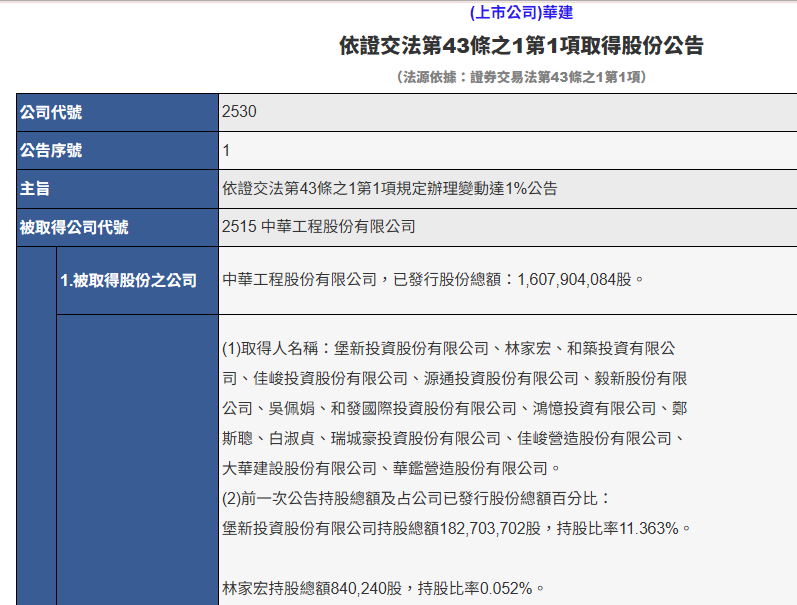

中工經營權爭奪案——股東提名權、假處分與董事改選
案例來源
中華工程股份有限公司（股票代號 2515，下稱「中工」）2026年董監事改選經營權爭奪案，由市場派寶佳機構與公司派威京集團對決。事件發生於2026年4月至5月，媒體報導完整，適合作為觀察經營權爭奪實務操作的案例。
董監改選流程：爭奪戰打在哪幾關
經營權爭奪表面上是買股票，實際上是搶董事席次。而董事席次的產出有一套法定流程，每一關都是可能的攻防節點。先看懂這張流程圖，再回頭看本案的時間軸，就會發現雙方的每一個動作都不是隨機的。
-
起點 任期屆滿：三年一次的機會窗口
依據：公司法§195
董事任期不得逾三年，但得連選連任。任期屆滿而不及改選時，延長其執行職務至改選董事就任時為止；主管機關並得依職權限期令公司改選，屆期仍不改選者，自限期屆滿時當然解任。
攻防點：這是整場戰役的時鐘。董事席次原則上要等三年一次的全面改選，錯過這一屆，下次機會就在三年後——這解釋了為什麼雙方都願意在單一年度投入數十億元資金與大量法律資源。但三年不是唯一的路：若能召開股東臨時會提前改選，就不必空等（見下方補充）。
-
起點（另一條路） 召開股東臨時會：不等三年的提前改選
依據：公司法§173、§173-1、§199、§199-1；證交法§43-5第4項
怎麼把會開成：
・繼續一年以上持有已發行股份總數3%以上之股東，得以書面記明提議事項及理由，請求董事會召集股東臨時會；請求提出後15日內董事會不為召集通知時，得報經主管機關許可自行召集（§173第1項、第2項）。
・繼續三個月以上持有已發行股份總數過半數之股東，得逕行自行召集，毋庸先請求董事會或報經許可（§173-1，因大同案增訂，實務上俗稱「大同條款」）。
・公開收購人與其關係人於公開收購後持股超過50%者，得請求董事會召集股東臨時會，不受§173第1項限制（證交法§43-5第4項）。
開成之後怎麼換人：
・解任個別董事：須經股東會特別決議（§199）。
・改選全體董事：於董事任期未屆滿前經決議改選全體董事，如未決議董事於任期屆滿始為解任者，視為提前解任（§199-1）。攻防點：這條路把「等三年」變成「等資格」。門檻高低決定了難易——3%只能「請求」董事會召集（董事會多半不理，還要再走主管機關許可這一關，曠日廢時）；持股過半才能直接自己開會。反過來說，公司派的防守重點就是讓對手永遠達不到門檻，主要手段是現金增資稀釋（發新股使分母變大）或引進友好股東；要注意買回庫藏股並無稀釋效果，反而會使對手比例上升，詳見下方工具箱說明。本案寶佳陣營持股約16.6%，離過半甚遠，因此並未走這條路，而是等2026年的全面改選。
-
關卡一 停止股票過戶日前：公司公告受理提名
依據：公司法§192-1第2項
公司應於停止過戶日前，公告受理董事候選人提名的期間、應選名額、受理處所等事項，受理期間不得少於10日。
攻防點：這是整場選舉的起跑槍。錯過受理期間，這一屆就沒有提名機會了。
-
關卡二 停止過戶日：股東名簿凍結，確認誰有提名資格
依據：公司法§192-1第3項、第5項第2款；公司法§165第2項、第3項
股份轉讓須記載於股東名簿，才能對抗公司。而股東名簿的記載變更有一段法定凍結期：公開發行公司於股東常會開會前60日內、股東臨時會開會前30日內，不得辦理過戶（非公開發行公司則為常會30日內、臨時會15日內）。這段期間即俗稱的「停止過戶期間」，期間起算自開會日往前推。
換句話說，名簿在此時被凍結，誰是股東、各持有多少股，就以這個時點的記載為準。持有已發行股份總數1%以上者才有提名權，是否達標同樣看這份凍結後的名簿。攻防點：這是整場爭奪戰的「投票資格截止日」。市場派必須在停止過戶日之前把股權買到位並完成過戶，晚一天買到的股票，這一屆完全用不上。這解釋了為什麼收購方要提前數月甚至一年布局，而不是等股東會前才動作。
-
關卡三 受理期間內：股東提出候選人名單
依據：公司法§192-1第3項、第4項
以書面提出，提名人數不得超過應選名額；須敘明被提名人的姓名、學歷、經歷。董事會自己提名的人數，同樣受應選名額限制。
攻防點：提名人數是否超額，是後續爭議的高頻引爆點（本案公司派主張的理由正是「超額提名」）。
-
關卡四 董事會審查：能刪不能刪
依據：公司法§192-1第5項
除有下列四款情事之一者外，應將被提名人列入候選人名單：
一、於公告受理期間外提出
二、停止過戶時持股未達1%
三、提名人數超過應選名額
四、未敘明被提名人姓名、學歷及經歷攻防點：這是本案最核心的爭議關卡。四款事由全部是形式要件，沒有一款是「能力不足」「不適任」這類實質判斷。2018年修法時更刪除了原條文「對董事被提名人應予審查」的文字，進一步限縮董事會的角色。
-
關卡五 股東會前：公告候選人名單
依據：公司法§192-1第6項
公開發行公司應於股東常會開會40日前（股東臨時會25日前）公告候選人名單及其學經歷。
攻防點：名單一公告，誰被刪掉就攤在陽光下了。被刪的一方要救濟，時間只剩這40天。
-
關卡六 救濟：保全程序
依據：民事訴訟法§538定暫時狀態之處分
提名遭違法剔除時，得聲請假處分，請求法院命公司將候選人列入名單，避免股東會先行召開造成既成事實。
攻防點：這條路徑不是事後才想出來的，公司法§192-1於2018年修法時，立法理由第八點即明文指出：董事會及其他召集權人違反第五項規定（應列入而未列入）者，提名股東得依民事訴訟法第七編「保全程序」辦理。立法者在修法當時就預留了這條救濟途徑。
-
關卡七 股東會：投票與表決權計算
董事選舉採累積投票制，每一股份有與應選名額相同的選舉權，可集中選舉一人或分配選舉數人。除自有持股外，亦可透過徵求委託書取得其他股東的表決權。
攻防點：累積投票制讓少數股東有機會靠集中投票搶下一席，這是制度設計上對少數派的保障。表決權從哪裡來（自有股權或委託書），則是最後階段的競爭焦點。
💡 用這張流程圖回看本案
中工於2026年5月21日股東常會進行第28屆董事全面改選，依§195董事任期不得逾三年，這種全面改選的機會窗口就是起點的時鐘；寶佳陣營從2025年4月就開始買股，到11月公告持股11.8%，是在趕關卡二的停止過戶日（上市公司依§165為股東常會開會前60日內停止過戶，以5月21日往前推算，約落在3月下旬，實際日期以公司公告為準）；公司派2026年4月以「超額提名」刪除候選人，動作發生在關卡四；寶佳聲請假處分，走的是關卡六；最終5月21日股東會改選，決勝在關卡七。
整場爭奪戰打了一年多，但真正的決戰點只有這幾關。看懂流程，才看得懂為什麼雙方要在那些特定時間點做那些事——也才看得懂，為什麼錯過了就要再等三年。
事件時間軸
- 2025/04/08–11/04
寶佳集團旗下堡新投資、大華建設（2530）等15家投資公司及自然人，在公開市場陸續買進中工股票，累計取得約18.3萬張（181,316,000股），耗資約23億元。
- 2025/11/03
中工發出聲明，指控堡新投資以「禿鷹掠奪」方式，在4個交易日內耗資逾20億元大量買進中工股票。
 中工（2515）週線圖，紅框標示區間即為股價與成交量劇烈波動的時間點；資料來源：雅虎奇摩股市
中工（2515）週線圖，紅框標示區間即為股價與成交量劇烈波動的時間點；資料來源：雅虎奇摩股市
- 2025/11/04
大華建設依證券交易法§43-1公告，首度證實以「併購」為目的取得中工11.8%股權，經營權之爭正式浮上檯面。
🤔 延伸思考：市場派收購股權以取得經營權，是否違法？
這題容易讓人直覺誤會，覺得用錢買股份、搶走別人公司的經營權聽起來就不對勁。但事實上，收購股權以取得經營權本身完全合法，是股份自由轉讓原則（公司法§163）下的正常市場機制。真正受到規範的不是「能不能買」，而是「收購的過程是否公開透明」：持股達一定比例以上須依§43-1公告申報，避免市場資訊不對稱；符合法定門檻的收購方式須依證券交易法§43-2至§43-5（§43-2、§43-3、§43-4、§43-5）踐行公開收購程序，讓所有股東有平等機會決定是否出售股票。換句話說，違法與否的關鍵在於「收購的方式」，不在於「收購取得經營權」這個結果本身。
- 2025/12/01
中工釋出善意，讓出一席董事，由大華建設董事長鄭斯聰以法人董事代表人身分進入中工董事會。
- 2025/12/23
中工董事會通過隔年（115年度）財務預算案，內容顯示預期營收將成長近93億元、稅後淨利成長約172%，屬極度重大之利多消息。鄭斯聰當時以法人董事代表人身分親自出席該次會議，知悉此一足以顯著影響股價的重大未公開消息。
- 2026/01/23
依公開資訊觀測站公告，鄭斯聰於當日18時18分07秒正式辭任中工法人董事（常理股份有限公司）代表人職務，公告原因為「因業務繁忙，故請辭法人董事代表人職務」。中工其後指控，此舉意在規避「內部人」身分，以便在消息公開前提前交易。
 公開資訊觀測站重大訊息公告，序號1，115/01/23 18:18:07
公開資訊觀測站重大訊息公告，序號1，115/01/23 18:18:07
- 2025/11/21–2026/02/12
大華建設持續加碼買進中工股票，累計持股比率提升至16.604%（約2.7億股）。中工發表聲明，質疑鄭斯聰請辭法人董事後、內部人責任尚未解除之際隨即加碼買股的時機點，並提及已有小股東就特定人士涉嫌內線交易向主管機關提出檢舉。
- 2026/02/26
中工正式對外公告115年度簡式財務預測，前述重大利多消息至此才算公開。依證券交易法規定，內部人（含曾任內部人者）於知悉重大消息後，至消息公開18小時內，均屬絕對禁止交易之法定期間。
- 2026/03/19
中工發動第二波法律行動，正式對鄭斯聰提出內線交易之刑事告發，指控其請辭後、財測公告前的禁售期間內，透過堡新投資、源通投資等旗下公司大舉加碼，堡新持股由11.363%增至13.851%，成交量異常暴增逾10倍。
- 2026/02/24
中工董事長周志明率律師團召開記者會，對10名人士提出證券交易法§157-1（內線交易）及§155（操縱股價）刑事告發，指控原受中工委任的股東會顧問業者及律師，在2025年11月4日重大消息公開前即集體布局買股，並指出新增股東群的股東戶號呈現異常的連續連號現象，懷疑涉及多帳戶協同操縱股價。依報導，告發對象包括長龍、聯洲、全通三家委託書通路業者及一名律師；中工主張該等業者長期受委任擔任股東會顧問，質疑其於合約存續期間利用職務之便知悉內幕消息並私下布局。（註：告發僅為單方指控之開始，尚未經檢察官偵查終結或法院認定，相關當事人在法律上仍受無罪推定原則保障。）
🤔 延伸思考：這起告發指控的行為，違反證券交易法哪些規定？
中工對10人提告內線交易與操縱股價，指控部分股東會顧問業者及律師利用職務之便知悉內幕消息並私下佈局買股。這與前面討論的「收購行為本身合法、違法與否在於程序」的原則，是否矛盾？（提示：內線交易規範的是「利用未公開資訊」，與「收購行為是否公開透明」是不同層次的問題）
💡 白話補充：什麼是「股東戶號連號」？
去證券商開戶買股票，就像去銀行辦帳戶一樣，系統會依「開戶時間先後」自動排發一組帳戶編號，很像排隊拿號碼牌。全台灣每天有成千上萬人在不同證券商、不同時間開戶，正常情況下，兩個互不相識的人幾乎不可能拿到相鄰或連續的號碼。
中工比對股東名冊後，發現一批「新股東」（包含委託書通路商高層、寶佳集團關係人）的帳戶編號竟然高度密集地連在一起。這暗示這些帳戶很可能是在同一段極短時間內、由同一個人集中安排開設的，不是各自獨立發生的投資行為。
如果背後真的是同一個操盤者用一堆人頭帳戶分散操作，就可以：（1）避開單一帳戶大額買進會被交易所系統自動盯上、列為「注意股」或「處置股」的監控機制；（2）讓多個帳戶之間互相買賣（自己人賣給自己人），製造這檔股票交易熱絡的假象，吸引真正的散戶跟著追價。這正是§155操縱股價要規範的核心行為：用人為方式製造交易活絡或價格異常的假象，誤導其他投資人的判斷。
戶號連號本身不是直接的犯罪證據，而是一個很強的「異常訊號」，通常會搭配股價漲幅、成交量異常這些客觀數據一起佐證，檢調才會進一步追查金流與通聯紀錄，確認背後是否真有人在操盤。
🤔 延伸思考：除了戶號連號，還有哪些訊號可以佐證操縱股價？
如果你是檢調人員，除了戶號連號之外，還有哪些交易面的證據可以佐證「多帳戶協同操縱股價」的懷疑？（提示：新聞中提到的股價漲幅55.16%、單日成交量暴增13.31倍、交易所列注意及處置股票，這些各自對應什麼樣的操縱股價手法）
- 2026/04/15
中工董事會將寶佳陣營提名的董事候選人自公告名單中刪除，寶佳陣營旗下三家投資公司向智慧財產及商業法院聲請假處分，法院裁准提供擔保金後恢復候選人資格。
- 2026/04/17
雙方陣營召開記者會宣布達成和平共識，公司派同意由寶佳陣營主導未來董事會。
- 2026/05/19
原任董事長周志明請辭。
- 2026/05/21
股東常會完成第28屆董事全面改選，寶佳陣營取得4席（含2席獨立董事），威京陣營保有3席，經營權正式易主。
引導討論
依公司法§192-1，持股一定比例以上的股東有權提出董事候選人名單。107年修法理由明確指出，該條刪除了「對董事被提名人應予審查」之文字，董事會或其他召集權人不再對被提名人有審查權，僅得依同條第5項列舉事由（如逾期提出、持股不足、提名人數超額、未敘明學經歷）進行形式認定。本案中工刪除寶佳提名候選人的正當性，即為假處分程序中的核心爭點。
🤔 延伸思考：股東提名權背後的立法目的是什麼？
如果你是中工的小股東，在假處分裁准前，你的股東提名權事實上是被誰、以什麼理由侵害的？公司法§192-1設計董事候選人提名權的立法目的是什麼？
股東認為自身提名權遭侵害，得聲請假處分作為保全程序，避免股東會在爭議未解前逕行召開、造成既成事實而難以回復。事實上，§192-1的107年修法理由亦明確指出，董事會或召集權人違反第5項規定（應列入候選人名單而未列入）者，提名股東得依民事訴訟法第七編「保全程序」辦理——這正是假處分制度在此類爭議中的法理依據。本案法院裁准假處分，展現這項程序在公司治理爭議中的實務功能。
🤔 延伸思考：沒有假處分制度會怎樣？
假處分作為保全程序，為什麼在公司經營權爭奪案中經常被使用？如果沒有假處分制度，股東的提名權要如何救濟？
鄭斯聰於2025年12月23日以法人董事身分出席董事會、知悉隔年財測大幅成長的重大利多消息後，於2026年1月23日隨即請辭。中工指控此舉意在規避內部人身分限制。依證券交易法§157-1第1項第4款，「喪失前三款身分後，未滿六個月者」仍受內線交易規範拘束；且該條規定的禁止交易期間，是延續到「消息公開後18小時內」，不因辭職而立即解除。中工主張，鄭斯聰旗下堡新投資、源通投資在財測正式公告（2026年2月26日）前的禁售期間內持續加碼買股，即已涉及內線交易。
🤔 延伸思考：立法者為什麼要堵住「先辭職再交易」這個漏洞？
請對照證券交易法§157-1第1項第4款「喪失前三款身分後，未滿六個月者」這個規定，思考立法者為什麼要把「曾經是內部人」的人也一併納入禁止交易的範圍，而不是只規範「現任」內部人？（提示：如果法律只管現任內部人，內部人只要先辭職就能規避所有交易限制，這樣的規範會有什麼漏洞？）
經營權攻防：雙方的工具箱
經營權爭奪不是單一行為，而是一連串攻防手段的組合。以下整理雙方在法律上可動用的主要工具，以及每項工具的代價。這是一份「工具清單」，不是「標準答案」，實際該用哪一項，取決於持股結構、時間點、資金實力與董事會席次分布。
進攻方（市場派）
目標：取得足夠股權與董事席次，改組董事會
公開市場收購
依據：公司法§163股份自由轉讓原則；證交法§43-1第1項申報義務、第3項強制公開收購
直接在集中市場買進股票累積持股。本案寶佳陣營即以此為主要手段，動用15家投資公司及自然人名義分散買進。
但分散名義能規避申報嗎？§43-1第1項的文字是「任何人單獨或與他人共同取得任一公開發行公司已發行股份總額超過5%之股份者」，應向主管機關申報及公告；強制公開收購的門檻同樣是「單獨或與他人共同」預定取得達一定比例者，應採公開收購方式（§43-1第3項）。主管機關對「共同取得」的認定是：以契約、協議或其他方式之合意，有共同取得股份之意思聯絡，不以書面為必要。換言之，法條本身就設計成合併計算，分散名義並不能合法規避這兩道門檻。
資金需求龐大；買進過程推升股價、成本遞增；達申報門檻後行蹤曝光，對手得以預作防備。
公開收購
公告特定價格與期間，向全體股東招買股份。相較於在市場零星買進，可在短期內取得大量股權，且程序公開透明。
須公告收購條件，對手有充分時間反制；收購價通常須高於市價才有吸引力；應賣股數不足預定數量時，收購可能失敗。
委託書徵求：真正的主戰場
不必真正持有股份，而是蒐集其他股東的表決權，在股東會上「借票投票」。在台灣，多數散戶不會親自出席股東會，委託書因此往往是決定勝負的關鍵，實務上已有董監持股合計不到1%仍能靠委託書守住經營權的案例。
徵求管道有兩條，都是兵家必爭：
・委託書通路商：依金管會資料，除券商外，符合資格申請辦理者為全通、長龍、聯洲、中信銀、台新銀等。2020年立法院財委會質詢時，立委指出全通、長龍、聯洲三家市占率約八成，加上元大約一成，四家合計約九成，並質疑是否構成壟斷；金管會主委當時回應將督促集保加強委託書辦理之查核，並禁止價購。由於通路資源有限，公司派若憑現任優勢提早簽約綁定主要通路，市場派即使有資金也難以找到管道向散戶徵求。
・證券商：券商營業員長期服務客戶，容易掌握持股較多的大戶名單，市占率愈高的券商愈受各方拉攏。
股務代理的資訊優勢：股務若由公司自辦，或委由傾向公司派的券商辦理，公司派能較早掌握股東名冊、委託書配發與統計狀況，於查核對手委託書時，也有較大的操作空間。
徵求人資格與徵求方式受委託書規則限制（我國對徵求人持股與資格的規範較美、日嚴格）；成本不低；委託書效力易生爭議，事後可能遭訴訟挑戰。
提名董事候選人
依據：公司法§192-1候選人提名制度
持股達1%以上股東得提出董事候選人名單。有了股權，還要有人選進得了名單，才能真正轉換成董事席次。
須符合持股門檻與期限；名單須經董事會審查後公告，實務上常成為公司派設卡的節點（本案即發生刪除候選人爭議）。
法律訴追與假處分
依據：民事訴訟法§538定暫時狀態假處分
提名遭不當剔除時，向法院聲請假處分，要求在本案訴訟確定前先回復候選人資格，避免股東會先開完造成既成事實。
須提供擔保金；法院審理有時間壓力，須趕在股東會前裁定；即使勝訴，也只是回到起跑線，不保證選得上。
防守方（公司派）
目標：增加己方票源、阻卻對手進入董事會、拖延時間
買回庫藏股（並轉讓予員工）
依據：證交法§28-2第1項至第6項
先破除一個常見誤解：買回庫藏股不會稀釋對手，反而會讓對手的表決權比例上升。因為買回之股份於未轉讓前不得享有股東權利（§28-2第5項），金管會並明示公司召開股東會時，庫藏股不算入已發行股份總數。分母變小，對手持股不變，比例自然上升。
買回的三種法定目的，後續處理並不相同（§28-2第1項、第4項）：
・第一款「轉讓股份予員工」：應於買回之日起五年內轉讓，逾期未轉讓者視為公司未發行股份，並應辦理變更登記
・第二款「配合股權轉換之用」：同上
・第三款「為維護公司信用及股東權益所必要」：條文明定並辦理銷除股份，應於買回之日起六個月內辦理變更登記
真正的防守價值在第一款的後半段動作：買回之後把股份轉讓給員工，這些股份重新恢復表決權，而且公司可以決定轉給誰。員工通常是現任經營團隊的友好票源，這才是實質創造己方票數的一步。單純買回放著或註銷，只是把浮動籌碼從市場上吸走、並推升股價墊高對手繼續增持的成本。
附帶效果：買回期間內，關係企業、董監事、經理人及持股逾10%之大股東不得賣出（§28-2第6項），等於同步鎖住內部人籌碼。
買回數量不得超過已發行股份總數10%，金額不得逾保留盈餘加發行股份溢價及已實現之資本公積（§28-2第2項）；消耗公司資金，可能損及財務結構；若只買不轉，對相對票數毫無幫助，還墊高了對手的比例。
現金增資引進友好股東
發行新股使總股數增加，對手持股比例被稀釋；若能安排由友好方認購，等於同時增加己方票源。
§267原股東有優先認購權，對手亦可依比例認購而維持持股比例；若刻意排除原股東，易遭質疑增資目的不當而生訴訟。
私募增資：繞過原股東優先認購的定向稀釋
公開發行公司得經代表已發行股份總數過半數股東之出席、出席股東表決權三分之二以上之同意，對特定人（金融機構、符合主管機關所定條件之專業投資人、該公司或關係企業之董監事及經理人）私募有價證券，不受公司法§267第1項至第3項（員工及原股東優先認購）之限制。這是與一般現金增資最關鍵的差別：公司可以指定由誰來認購，對手無法依比例跟進，稀釋效果因此是「定向」的。
實例：2015年日月光對矽品發動公開收購後，矽品先與鴻海議定以換股方式交叉持股，鴻海將持有矽品增資後股權21.24%，惟該案於同年10月15日股東臨時會未獲通過；矽品隨後於12月宣布與紫光集團簽署認股協議，由紫光參與私募，增資後將持有矽品約24.9%股權。這兩個動作的目的相同——引進友好方、稀釋收購者的相對持股。本案例經臺灣證券交易所及證券櫃檯買賣中心製作為公司治理教案。
決議門檻不低，而收購方此時往往已是大股東，議案未必過得了（矽品與鴻海的換股案即遭股東臨時會否決）；私募須於股東會召集事由中列舉價格訂定依據、特定人選擇方式、辦理私募之必要理由，不得以臨時動議提出；私募股票有轉讓限制；引進特定人涉及外資、陸資者，另須通過主管機關審查；大幅膨脹股本亦會稀釋每股獲利，可能招致既有股東與外資法人反對。
尋找白衣騎士
實務操作，無單一條文依據；具體執行多藉由私募、換股或策略聯盟為之
引進友好的第三方大股東，共同對抗敵意收購方，或由其接手部分股權。實務上常與上一項私募增資或換股結盟併用——矽品先後找上鴻海與紫光，即為典型。
等於引狼入室的風險：今日的盟友可能是明日的收購者；談判籌碼往往要以董事席次或經營權分享換取。
以形式要件剔除候選人
依據：公司法§192-1董事會審查權限
以提名超額、文件不備、資格不符等形式事由，將對手提名的候選人排除於名單之外。本案公司派即以「超額提名」為由刪除寶佳陣營名單。
審查權限範圍本身即為爭點（詳見上方引導討論Q1）；遭對手聲請假處分時，法院可能裁定回復，反而賠上正當性與時間。
法律訴追（內線交易、操縱股價）
針對對手收購過程中的違法情事提出告發，訴諸主管機關與司法調查，同時在輿論上取得道德高地。
舉證困難，刑事程序曠日廢時，通常趕不上股東會時程；若最終不起訴，反而削弱公司派公信力。
焦土政策：摘除皇冠上的珠寶
依據：公司法§185第1項第2款（讓與全部或主要部分之營業或財產）為爭點所在
出售公司最有價值的資產或子公司，降低公司對收購方的吸引力，使其收購意圖落空。因為傷及公司自身，故稱焦土。
實例：2022年泰山（1218）與龍邦（2514）經營權之爭期間，泰山董事會於12月2日決議處分所持有的全家（5903）股票，並於12月5日以每股187元出售43,300張予萬寶開發，交易總額約80.97億元。全家持股長期是泰山的主要獲利來源，市場多認為龍邦入主的真正目標即在於此。
法律爭點：依§185第1項，讓與全部或主要部分之營業或財產，應經代表已發行股份總數三分之二以上股東出席之股東會、以出席股東表決權過半數同意行之（公開發行公司出席數不足者，得以過半數股東出席、出席表決權三分之二以上同意為之），且議案須先經三分之二以上董事出席之董事會以出席董事過半數決議提出。龍邦主張處分金額接近泰山資本額的兩倍，屬讓與主要部分之財產，僅由董事會決議不合法，遂提起確認董事會決議無效之訴；泰山則主張全家股票屬投資項目而非食品本業，縱無該持股公司仍可持續營運，不符§185要件。
爭點核心在於「主要部分」如何認定。經濟部函釋指出，「主要部分」之認定應視各該公司之營業及其經營性質而有不同，尚難概括釋示，且不以章程有無列明為據——這正是本類爭議難有一致標準的原因。
另須注意，證交所事後認定泰山於該案的評估及執行未依取得或處分資產程序及內控制度辦理，資訊揭露不足，處以200萬元違約金。
傷敵一千自損八百，公司價值實質減損，既有股東同受其害；程序上極易觸法（§185股東會決議、取得或處分資產程序、重大訊息揭露），衍生民事訴訟與行政裁罰；若處分時點鄰近經營權爭奪，另可能引發非常規交易、背信或內線交易之刑事調查。
📄 一手證據：公告本身就證明了「合併計算」
下圖為公開資訊觀測站上，大華建設（2530）依證交法§43-1第1項規定辦理的「變動達1%公告」，被取得公司為中華工程（2515），已發行股份總額1,607,904,084股。
值得注意的是「取得人名稱」欄位：堡新投資、林家宏、和築投資、佳峻投資、源通投資、毅新、吳佩娟、和發國際投資、鴻誠投資、鄭斯聰、白淑貞、瑞城豪投資、佳峻營造、大華建設、華鑑營造，15個法人與自然人列在同一份公告裡。這正是§43-1「單獨或與他人共同取得」合併計算的具體呈現——他們不是各自分開申報，而是以共同取得人的身分一起申報。

課堂討論方向：既然分散名義擋不住§43-1申報與強制公開收購，為什麼還要動用15個名義？這題要引導學生區分「法律效果」與「實務效果」兩個層次：
・擋不掉的：§43-1申報、強制公開收購門檻，因為法條明文合併計算
・可能擋得掉的：證交法§22-2、§25、§157、§157-1所稱「持股超過10%之大股東（內部人）」，該門檻並未隨§43-1調降為5%，仍為10%，且係按各該股東個別計算。若每個名義單獨持股壓在10%以下，即不會各自成為內部人，可避開短線交易歸入權、轉讓方式限制、持股申報等一整套約束
・可能延後的：在達到申報門檻並公告之前，市場上看到的是十幾個看似不相干的買方，而非一個集中的大戶，公司派不易及早察覺並啟動防禦
提醒：以上為法律架構的分析。本案寶佳陣營實際採用多名義買進的動機，並無公開說明或司法認定可資證實，屬於推論，討論時應向學生說明此一界線。
💡 思考角度：工具有沒有用，要看時間點
同一項工具在不同時間點的效果天差地別。以本案為例，公司派若在2025年4月就察覺異常持股並啟動現金增資引進友好股東，稀釋效果遠大於2026年4月對手已握有16.6%股權之後才動作；買回庫藏股也一樣，要留下足夠時間把股份轉讓給員工才生得出票源，等到停止過戶日前夕才買，來不及轉讓就只剩墊高股價的作用。而到了股東會前夕，能用的工具實際上只剩下候選人資格的形式審查與訴訟拖延。
這也是為什麼經營權攻防的核心不只是「有哪些手段」，而是在資訊不完整、時間壓力下，判斷現在該動用哪一項。
其他討論
- 比較本案與2020年大同公司經營權之爭，兩案在董事提名爭議上的操作手法有何異同？
相關報導亦可參考：聯合新聞網、經濟日報、MoneyDJ理財網；延伸閱讀可參考〈中工經營權爭奪案〉一文的完整分析。
本教材為教學目的整理，內容依公開新聞報導彙整而成，不代表本課程對任一方之立場評價。案例分析僅供課堂討論使用，實際法律爭議應以正式裁判文書及專業法律諮詢為準。